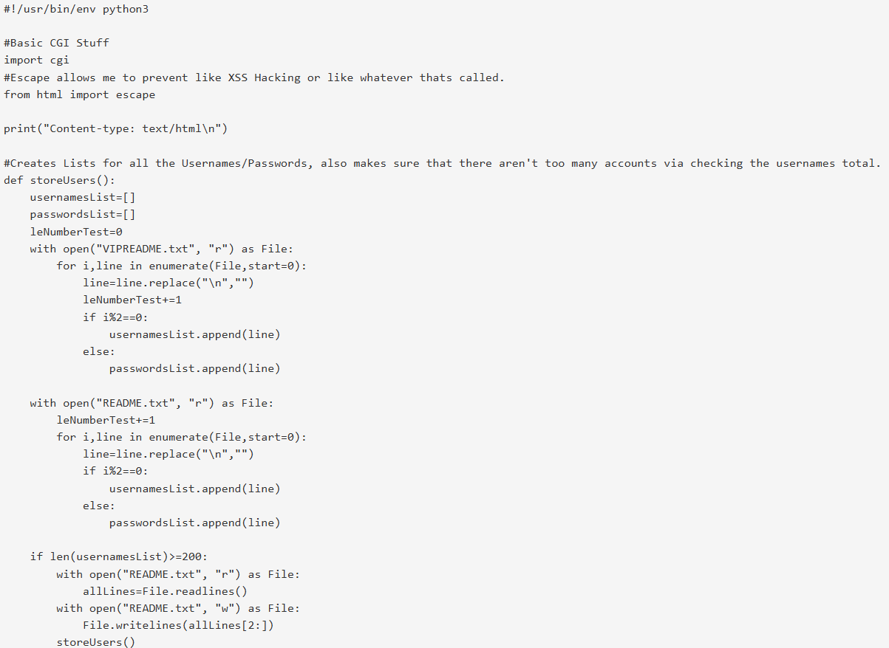
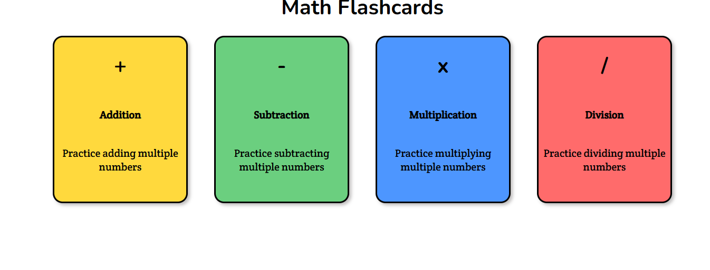
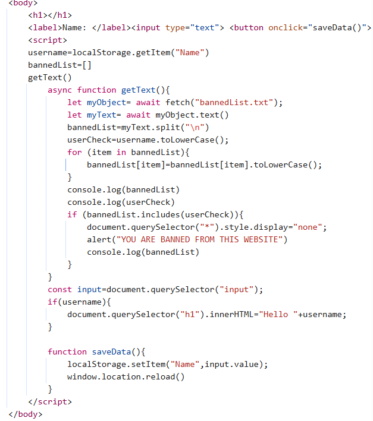
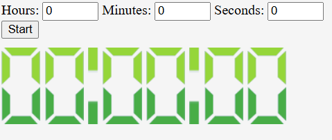
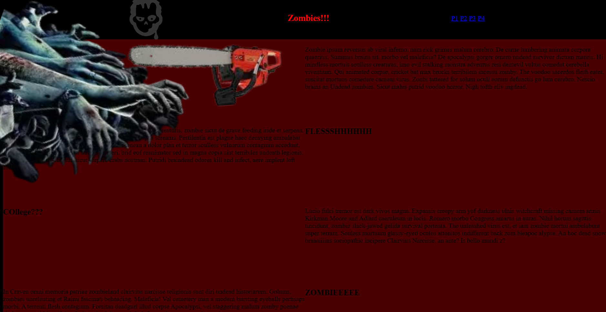

Evan Ray
Hello Everyone! My name is Evan. My entire life I've wanted to be a programmer.


My journey first started around 5th grade, when I started coding in Scratch, a block based programming website. I made many different projects there, from simple boss fights to a Kahoot styled game with a Save/Load system.
In Freshman Year of high school, I had a class called Computing Core. When I found out that one of the classes I was going to have would be a Python class, I downloaded Python and quickly taught myself a little bit of it. By the time that the Python class had started, I had gotten pretty good at using it. I tried to go above and beyond. When we had an assignment to create something with turtle, I made a Tic-Tac-Toe board where you could play against a CPU or another person.

When the Python section was over, I didn't stop, I kept on programming with Python, trying to get better at it. At the end of the school year, I created a Board Game, which while not perfect, was my best work yet.

While my artistic abilties weren't perfect, I was doing really well at using Javascript. I used it to make a few small projects, including Conway's Game of Life, which I consider to be my most complex Javascript code yet. I almost created a Card Game using Javascript, but unfortunately didn't have the amount of time to finish all the CPU mechanics.
